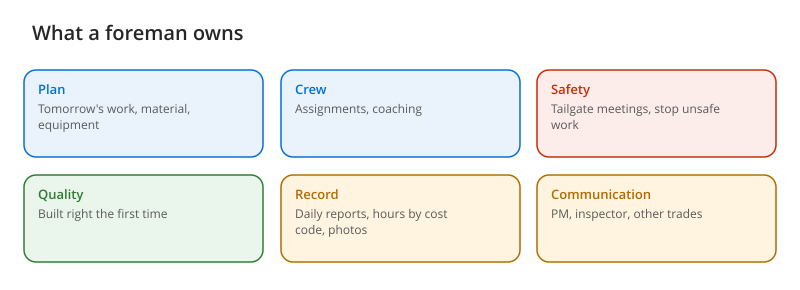

Foremen: promoting, training and keeping them
In one sentence: the foreman controls productivity, safety and the daily record on every job, so choosing, training and keeping good foremen is one of the highest-return things a small contractor does.

What a foreman owns
- Planning tomorrow's work, material and equipment today.
- The crew: who does what, coaching, discipline.
- Safety: tailgate meetings, hazards, stopping unsafe work. See Safety program as a business system.
- Quality: built to plan and spec the first time.
- The record: daily reports, hours by cost code, photos, extra work. See Daily reports and documentation.
- Communication with the PM, the inspector and other trades.
Choosing one
The best journeyman isn't always the best foreman. Look for someone who plans ahead, stays calm, writes clearly enough, is respected by the crew and tells you about problems early.
Training
- Reading the estimate: hours and quantities by cost code for their job.
- Daily reports and time by cost code, and why they matter in a claim.
- Change recognition: what's extra work, and who to tell before doing it.
- Leadership basics: giving instructions, correcting, handling conflict.
- A short job start meeting with the PM on every job: scope, budget, schedule, risks.
Keeping them
- Pay that reflects the responsibility; consider a share of job savings tied to safety and quality, not just speed.
- Give them the plan, the tools and the material they asked for.
- Back them up with the inspector and the crew.
- Ask their opinion on bids and methods.
PM notes
Show each foreman their job's cost report every two weeks. Foremen who see the numbers start managing them. See Job costing: knowing what each job really made.
Common mistakes
- Promoting the fastest worker without checking leadership skills.
- Never showing the foreman the budget.
- Bonuses for speed only, which reward shortcuts on safety and quality.